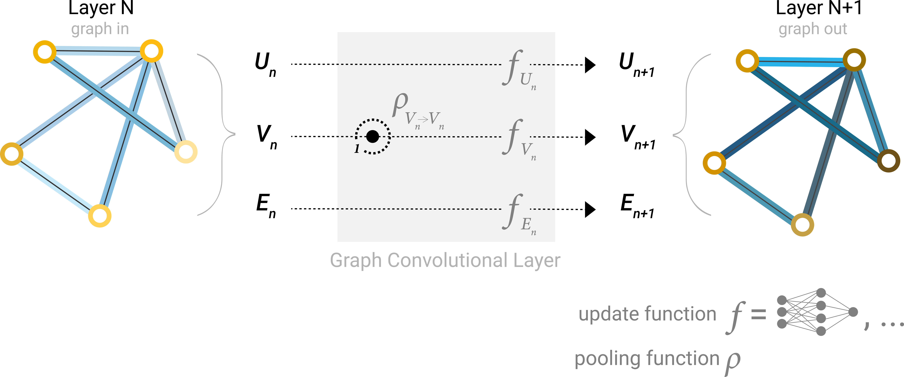
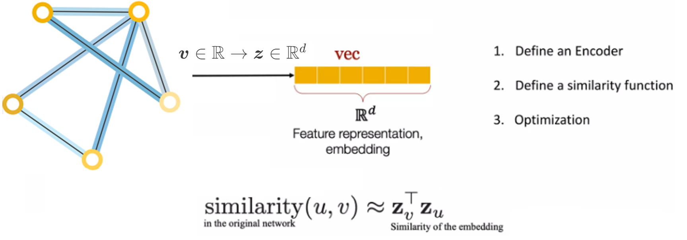
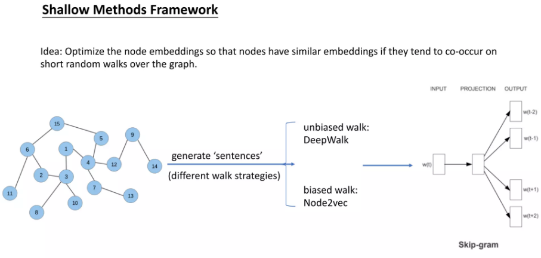
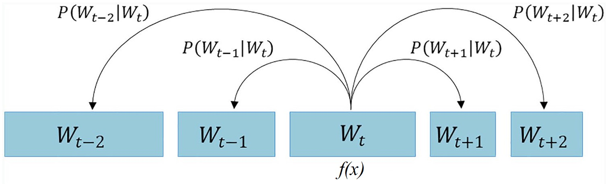
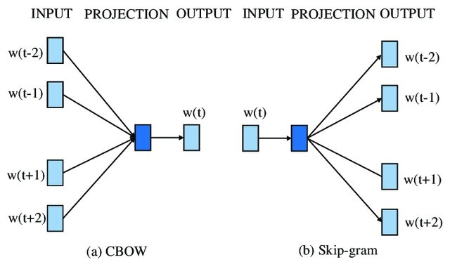

Creating Node Representations with DeepWalk#
Node Embedding#
Re-visit a layer of a simple GNN figure mentioned in A Gentle Introduction to Graph Neural Networks:

A single layer of a simple GNN. A graph is the input, and each component (V,E,U) gets updated by a MLP to produce a new graph. Each function subscript indicates a separate function for a different graph attribute at the n-th layer of a GNN model.
The goal of node embedding is encoding nodes so that similarity in the embedding space (e.g., dot product) approximates similarity in the original network.
See:
Johnson–Lindenstrauss lemma, at Foundations of Data Science course of FUM:
The Johnson-Lindenstrauss lemma states that if the data points lie in a very high-dimensional space, then projecting such points on simple random directions preserves their pairwise distances.
Weisfeiler Leman graph isomorphism test in How Powerful are Graph Neural Networks?, ICLR 2019, by: Keyulu Xu, Weihua Hu, Jure Leskovec, Stefanie Jegelka
The Weisfeiler-Lehman algorithm is a powerful method to refine node labels based on neighborhood information in graphs. It serves as a foundational concept for GNNs, guiding how these networks aggregate information from their neighbors to learn better node and graph representations.


DeepWalk and Skip-Gram#
Random Walks#
A random walk is a mathematical model that describes a path composed of a succession of random steps. In the context of graph theory, a random walk on a graph is a sequence of vertices where each vertex in the sequence is chosen randomly from the neighbors of the previous vertex.
Skip-Gram#
The skip-gram model is a popular technique in natural language processing (NLP) for learning word embeddings. It aims to learn a vector representation of each word in a corpus, such that the vectors of similar words are close to each other in the vector space. In the skip-gram model, the objective is to predict the context words (i.e., words that appear within a certain window size around a target word) given the target word.
DeepWalk#
DeepWalk is a graph embedding technique that uses random walks and the skip-gram model to learn low-dimensional representations of vertices in a graph. The key idea behind DeepWalk is to treat the sequences of vertices obtained from random walks on a graph as if they were sentences in a document, and then apply the skip-gram model to learn the vertex embeddings.
The DeepWalk algorithm consists of the following steps:
Generate random walks: For each vertex in the graph, perform multiple random walks starting from that vertex. The length of each random walk is a hyperparameter.
Apply skip-gram: Treat the sequences of vertices obtained from the random walks as “sentences” and apply the skip-gram model to learn the vertex embeddings. The objective is to predict the context vertices given a target vertex.
Learn vertex embeddings: The skip-gram model learns a vector representation for each vertex in the graph, such that vertices that appear in similar contexts (i.e., have similar neighborhoods) have similar vector representations.
The intuition behind DeepWalk is that vertices that are close in the graph (i.e., share many common neighbors) will tend to appear in similar contexts during the random walks, and thus will have similar vector representations learned by the skip-gram model.
By combining random walks and the skip-gram model, DeepWalk is able to learn low-dimensional, continuous representations of vertices that capture the structural information of the graph. These vertex embeddings can then be used as features for various graph-based tasks, such as node classification, link prediction, and graph visualization.
Skip-Gram Model in Natural Language Processing#
This following images depicts the concept of the skip-gram model, which is a popular technique in natural language processing (NLP) for learning word embeddings. The skip-gram model aims to learn a vector representation of each word in a corpus, such that the vectors of similar words are close to each other in the vector space.
The image shows the skip-gram model in the context of a sequence of words, where the objective is to predict the context words (i.e., words that appear within a certain window size around a target word) given the target word.
The central part of the image, labeled \( f(x) \), represents the skip-gram model, which takes the current word \( W_t \) as input and tries to predict the surrounding context words, such as \( W_{t-2} \), \( W_{t-1} \), \( W_{t+1} \), and \( W_{t+2} \).
This process can be viewed as a Markov model, where the prediction of the context words depends only on the current word and not on the entire sequence of words. The probabilities of the context words, denoted as
are the outputs of the skip-gram model.
By training the skip-gram model on a large corpus of text, the model learns to capture the semantic and syntactic relationships between words, resulting in word embeddings that can be used as features for various NLP tasks, such as text classification, named entity recognition, and machine translation.

For more information about the role of Markov Model in the learning and language models, see Machine Learning section of Learning Theory Course at FUM.
CBOW and Skip-gram#

Getting started with Word2Vec in Gensim and making it work!#
The idea behind Word2Vec is pretty simple. We are making and assumption that you can tell the meaning of a word by the company it keeps. This is analogous to the saying show me your friends, and I’ll tell who you are. So if you have two words that have very similar neighbors (i.e. the usage context is about the same), then these words are probably quite similar in meaning or are at least highly related.
In the following, you will learn how to use the Gensim implementation of Word2Vec and actually get it to work!
A practical example of word embedding#
Let’s start with a section of Anne of Green Gables:
As much as she hated Gilbert, however, did she love Diana, with all the love of her passionate little heart, equally intense in its likes and dislikes. One evening Marilla, coming in from the orchard with a basket of apples, found Anne sitting along by the east window in the twilight, crying bitterly. “Whatever’s the matter now, Anne?” she asked. “It’s about Diana,” sobbed Anne luxuriously. “I love Diana so, Marilla. I cannot ever live without her. But I know very well when we grow up that Diana will get married and go away and leave me. And oh, what shall I do? I hate her husband–I just hate him furiously. I’ve been imagining it all out–the wedding and everything–Diana dressed in snowy garments, with a veil, and looking as beautiful and regal as a queen; and me the bridesmaid, with a lovely dress too, and puffed sleeves, but with a breaking heart hid beneath my smiling face. And then bidding Diana goodbye-e-e–” Here Anne broke down entirely and wept with increasing bitterness. Marilla turned quickly away to hide her twitching face; but it was no use; she collapsed on the nearest chair and burst into such a hearty and unusual peal of laughter that Matthew, crossing the yard outside, halted in amazement. When had he heard Marilla laugh like that before? “Well, Anne Shirley,” said Marilla as soon as she could speak, “if you must borrow trouble, for pity’s sake borrow it handier home. I should think you had an imagination, sure enough.”
— Lucy Maud Montgomery, Anne of Green Gables
Gensim & NLTK#
Show code cell content
# Auto-setup when running on Google Colab
import os
if 'google.colab' in str(get_ipython()) and not os.path.exists('/content/graph-neural-networks'):
!git clone -q https://github.com/gta-lab/graph-neural-networks.git /content/graph-neural-networks
%cd graph-neural-networks/notebooks
text = """As much as she hated Gilbert, however, did she love Diana, with all the
love of her passionate little heart, equally intense in its likes and
dislikes. One evening Marilla, coming in from the orchard with a basket
of apples, found Anne sitting along by the east window in the twilight,
crying bitterly.
“Whatever’s the matter now, Anne?” she asked.
“It’s about Diana,” sobbed Anne luxuriously. “I love Diana so, Marilla.
I cannot ever live without her. But I know very well when we grow up
that Diana will get married and go away and leave me. And oh, what shall
I do? I hate her husband--I just hate him furiously. I’ve been imagining
it all out--the wedding and everything--Diana dressed in snowy garments,
with a veil, and looking as beautiful and regal as a queen; and me the
bridesmaid, with a lovely dress too, and puffed sleeves, but with a
breaking heart hid beneath my smiling face. And then bidding Diana
goodbye-e-e--” Here Anne broke down entirely and wept with increasing
bitterness.
Marilla turned quickly away to hide her twitching face; but it was no
use; she collapsed on the nearest chair and burst into such a hearty and
unusual peal of laughter that Matthew, crossing the yard outside, halted
in amazement. When had he heard Marilla laugh like that before?
“Well, Anne Shirley,” said Marilla as soon as she could speak, “if you
must borrow trouble, for pity’s sake borrow it handier home. I should
think you had an imagination, sure enough.”
""".split()
from gensim.models.word2vec import Word2Vec
# Create Word2Vec
model = Word2Vec([text],
sg=1, # Skip-gram
vector_size=10,
min_count=0,
window=3)
# Train model
model.train([text], total_words=len(text), epochs=50)
model.wv.most_similar(positive="Diana")
[('her', 0.9902161359786987),
('she', 0.9899694919586182),
('wedding', 0.988711416721344),
('should', 0.9884231686592102),
('pity’s', 0.9849447011947632),
('but', 0.9848229885101318),
('east', 0.9828867316246033),
('hate', 0.9828394055366516),
('go', 0.9821310043334961),
('like', 0.9820447564125061)]
Apply the model to the whole book of Anne of Green Gables
Show code cell source
import numpy as np
from gensim.models.word2vec import Word2Vec
import string
import io
import nltk
nltk.download('stopwords')
from nltk.corpus import stopwords
[nltk_data] Downloading package stopwords to
[nltk_data] C:\Users\m.amintoosi\AppData\Roaming\nltk_data...
[nltk_data] Package stopwords is already up-to-date!
Show code cell source
fileName = "../data/Anne_of_Green_Gables.txt"
file = io.open(fileName, encoding='utf-8')
book_text = file.read()
file.close()
text = book_text.split()
# Remove stopwords
stop_words = set(stopwords.words('english'))
text = [word for word in text if word.lower() not in stop_words]
# Remove punctuation
translator = str.maketrans('', '', string.punctuation + "'"+"”"+"“")
text = [word.translate(translator) for word in text]
# Create Word2Vec
model = Word2Vec([text],
sg=1, # Skip-gram
vector_size=50,
min_count=1,
window=5,
workers=1,
seed=0)
print(f'Shape of W_embed: {model.wv.vectors.shape}')
# Train model
model.train([text], total_words=len(text), epochs=100)
model.wv.most_similar(positive="Anne")
Shape of W_embed: (8920, 50)
[('Marilla', 0.8268883228302002),
('said', 0.6982665657997131),
('faltered', 0.610625684261322),
('horrified', 0.6060405373573303),
('astonishment', 0.6010062098503113),
('spelled', 0.5995970964431763),
('I', 0.5941324830055237),
('fiddlesticks', 0.5927588939666748),
('Oooh', 0.5925849080085754),
('unsympathetic', 0.590878427028656)]
model.wv.most_similar(positive="Shirley")
[('mother’s', 0.8844769597053528),
('Yours', 0.8692860007286072),
('owner', 0.8639934659004211),
('father’s', 0.8601971864700317),
('Walter', 0.8578155636787415),
('remain', 0.8461606502532959),
('Bertha', 0.8234245777130127),
('respectfully', 0.817496120929718),
('Will', 0.8153164386749268),
('Call', 0.810065746307373)]
Random walk#
Erdős-Rényi Model#
nx.erdos_renyi_graph is a function from the NetworkX library in Python that generates a random graph based on the Erdős-Rényi model. This model is one of the simplest and most widely studied random graph models.
Overview of the Erdős-Rényi Model#
There are two primary formulations of the Erdős-Rényi model:
G(n, p): In this model, a graph is constructed by adding nodes one at a time (where ( n ) is the total number of nodes). Each possible edge between any pair of nodes is included independently with a probability ( p ).
G(n, m): In this model, ( n ) nodes are connected by creating exactly ( m ) edges chosen uniformly at random from all possible edges that could exist between the nodes.
The Erdős-Rényi random graphs are often used in various fields, including:
Network theory: To study the properties of random graphs.
Computer science: In algorithms related to networks and to simulate networks with random connections.
Random graphs can help researchers understand the behavior of more complex structures and networks in real-world applications.
import networkx as nx
import matplotlib.pyplot as plt
import numpy as np
# Create a graph
G = nx.erdos_renyi_graph(10, 0.3, seed=1, directed=False)
# Plot graph
plt.figure()
plt.axis('off')
nx.draw_networkx(G,
pos=nx.spring_layout(G, seed=0),
node_size=600,
cmap='coolwarm',
font_size=14,
font_color='white'
)
C:\Users\m.amintoosi\AppData\Roaming\Python\Python310\site-packages\networkx\drawing\nx_pylab.py:437: UserWarning: No data for colormapping provided via 'c'. Parameters 'cmap' will be ignored
node_collection = ax.scatter(
import random
random.seed(0)
def random_walk(start, length):
walk = [str(start)] # starting node
for i in range(length):
neighbors = [node for node in G.neighbors(start)]
next_node = np.random.choice(neighbors, 1)[0]
walk.append(str(next_node))
start = next_node
return walk
# Create a list of random walks
print(random_walk(0, 3))
print(random_walk(6, 3))
['0', '4', '0', '9']
['6', '3', '4', '9']
Karate Club Example#
# Load dataset
G = nx.karate_club_graph()
# Process labels (Mr. Hi = 0, Officer = 1)
true_labels = np.zeros((len(G.nodes)))
for i, node in enumerate(G.nodes):
label = G.nodes[node]['club']
true_labels[i] = (1 if label == 'Officer' else 0)
# Plot graph
plt.figure(figsize=(12,12))
plt.axis('off')
nx.draw_networkx(G,
pos=nx.spring_layout(G, seed=0),
node_color=true_labels,
node_size=800,
cmap='coolwarm',
font_size=14,
font_color='white'
)
Clustering the nodes with k-means. The adjacency matrix is used as the features’ matrix.#
from sklearn.cluster import KMeans
# Obtain features from the adjacency matrix (or use a different method for features)
X = nx.to_numpy_array(G)
print(X)
# Apply k-means clustering (let's choose 2 clusters for the Karate club graph)
kmeans = KMeans(n_clusters=2, random_state=42)
labels = kmeans.fit_predict(X)
# Plot graph with clusters
plt.figure(figsize=(12, 12))
plt.axis('off')
nx.draw_networkx(G,
pos=nx.spring_layout(G, seed=0),
node_color=labels,
node_size=800,
cmap='coolwarm',
font_size=14,
font_color='white'
)
plt.title('K-Means Clustering of the Karate Club Graph, using adjacency matrix')
plt.show()
[[0. 4. 5. ... 2. 0. 0.]
[4. 0. 6. ... 0. 0. 0.]
[5. 6. 0. ... 0. 2. 0.]
...
[2. 0. 0. ... 0. 4. 4.]
[0. 0. 2. ... 4. 0. 5.]
[0. 0. 0. ... 4. 5. 0.]]
C:\Users\m.amintoosi\AppData\Roaming\Python\Python310\site-packages\sklearn\cluster\_kmeans.py:1412: FutureWarning: The default value of `n_init` will change from 10 to 'auto' in 1.4. Set the value of `n_init` explicitly to suppress the warning
super()._check_params_vs_input(X, default_n_init=10)
Clustering the nodes with k-means. The node degrees are used as the node features.#
from sklearn.cluster import KMeans
# Extract node features (node degrees)
X = np.array([dict(G.degree())[node] for node in G.nodes])
print(X)
# Apply K-means clustering
n_clusters = 2 # Number of clusters
kmeans = KMeans(n_clusters=n_clusters, random_state=0)
labels = kmeans.fit_predict(X.reshape(-1, 1))
# Plot graph with clusters
plt.figure(figsize=(12, 12))
plt.axis('off')
nx.draw_networkx(G,
pos=nx.spring_layout(G, seed=0),
node_color=labels,
node_size=800,
cmap='coolwarm',
font_size=14,
font_color='white'
)
plt.title('K-Means Clustering of the Karate Club Graph, using node degrees')
plt.show()
[16 9 10 6 3 4 4 4 5 2 3 1 2 5 2 2 2 2 2 3 2 2 2 5
3 3 2 4 3 4 4 6 12 17]
C:\Users\m.amintoosi\AppData\Roaming\Python\Python310\site-packages\sklearn\cluster\_kmeans.py:1412: FutureWarning: The default value of `n_init` will change from 10 to 'auto' in 1.4. Set the value of `n_init` explicitly to suppress the warning
super()._check_params_vs_input(X, default_n_init=10)
For an introduction to K-means clustering, see the Data Minig Course at FUM
Deep Walk#
Now, we use random walks to generate node features as sentences in word embedding and then use word2vec for node embedding (Deep Walk).
# Create a list of random walks
walks = []
for node in G.nodes:
for _ in range(80):
walks.append(random_walk(node, 10))
# Print the first random walk
print(walks[0])
['0', '12', '3', '13', '0', '7', '0', '11', '0', '13', '33']
from gensim.models.word2vec import Word2Vec
# Create Word2Vec
model = Word2Vec(walks,
hs=1, # Hierarchical softmax
sg=1, # Skip-gram
vector_size=50,
window=10,
workers=1,
seed=1)
print(f'Shape of embedding matrix: {model.wv.vectors.shape}')
# Build vocabulary
model.build_vocab(walks)
# Train model
model.train(walks, total_examples=model.corpus_count, epochs=30, report_delay=1)
Shape of embedding matrix: (34, 50)
(187238, 897600)
# Most similar nodes
print('Nodes that are the most similar to node 0:')
for similarity in model.wv.most_similar(positive=['0']):
print(f' {similarity}')
# Similarity between two nodes
print(f"\nSimilarity between node 0 and 4: {model.wv.similarity('0', '4')}")
Nodes that are the most similar to node 0:
('10', 0.7029028534889221)
('17', 0.6832481026649475)
('11', 0.6811116337776184)
('4', 0.674858808517456)
('6', 0.6575378179550171)
('5', 0.6425192356109619)
('21', 0.6237736344337463)
('16', 0.6155098676681519)
('1', 0.5802515149116516)
('3', 0.5409675240516663)
Similarity between node 0 and 4: 0.6748587489128113
Visualizing node embeddings in 2 dimensions#
For an introduction to PCA, see the Foundations of Data Science Course at FUM.
from sklearn.manifold import TSNE
# Preprocess word vectors and label
# nodes_wv = np.array([model.wv.get_vector(str(i)) for i in range(len(model.wv))])
node_embeddings = np.array([model.wv[str(node)] for node in G.nodes])
labels = np.array(true_labels)
# Train TSNE
tsne = TSNE(n_components=2,
learning_rate='auto',
init='pca',
random_state=0).fit_transform(node_embeddings)
# Plot TSNE
plt.figure(figsize=(6, 6))
plt.scatter(tsne[:, 0], tsne[:, 1], s=100, c=labels, cmap="coolwarm")
plt.show()
And now, the power of deep walk appears#
# Partition the nodes based on similarity to node 0 and node 33
node_0_emb = model.wv['0']
node_33_emb = model.wv['33']
distances = np.array([np.linalg.norm(node_embeddings - node_0_emb, axis=1),
np.linalg.norm(node_embeddings - node_33_emb, axis=1)]).T
labels = np.argmin(distances, axis=1)
# Plot the graph with partitioned nodes
plt.figure(figsize=(12, 12))
plt.axis('off')
nx.draw_networkx(G,
pos=nx.spring_layout(G, seed=0),
node_color=labels,
node_size=800,
cmap='coolwarm',
font_size=14,
font_color='white'
)
plt.title('Karate Club Graph Partitioned by Similarity to Nodes 0 and 33')
plt.show()
Note that the above result was achieved without any node features!
Using classic classification methods on created node embeddings, such as random forest#
For an introduction to Random Forest, see the Data Minig Course at FUM
from sklearn.ensemble import RandomForestClassifier
from sklearn.metrics import accuracy_score
# Create masks to train and test the model
train_mask = [2, 4, 6, 8, 10, 12, 14, 16, 18, 20, 22, 24]
test_mask = [0, 1, 3, 5, 7, 9, 11, 13, 15, 17, 19, 21, 23, 25, 26, 27, 28, 29, 30, 31, 32, 33]
# Train classifier
clf = RandomForestClassifier(random_state=0)
clf.fit(node_embeddings[train_mask], true_labels[train_mask])
# Evaluate accuracy
y_pred = clf.predict(node_embeddings[test_mask])
acc = accuracy_score(y_pred, true_labels[test_mask])
print(f'Accuracy = {acc*100:.2f}%')
Accuracy = 90.91%